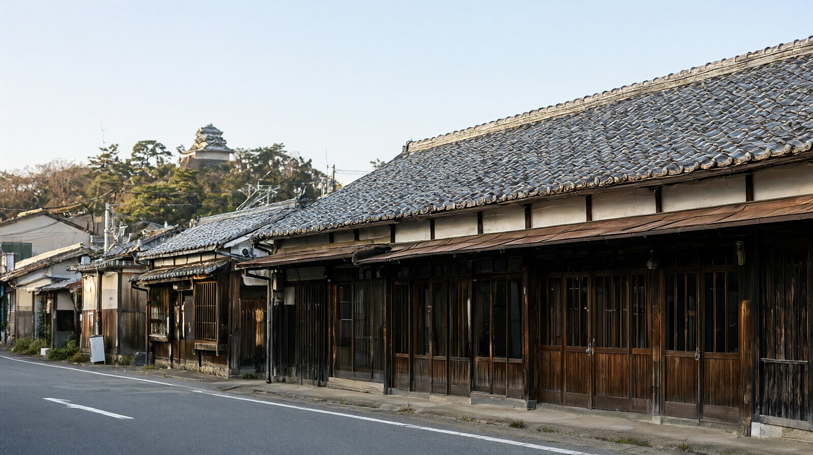

주부·시코쿠·기타
0. 이 페이지가 다루는 범위부터
이 권역은 지리적으로 흩어져 있습니다. 시코쿠(마쓰야마, 다카마쓰), 주부(나고야), 홋카이도(삿포로), 오키나와를 한 페이지에 묶는 이유는 한국에서 직항으로 바로 갈 수 있는 곳이 이 구간에 몰려 있기 때문입니다. 반대로 이 페이지 안에서 두 도시를 묶은 여행을 권하지는 않습니다. 권역이 아니라 "직항이 있는 소도시 모음"으로 봐 주세요.
지금은 마쓰야마, 나고야, 다카마쓰, 삿포로, 오키나와 다섯 도시 허브가 모두 열려 있습니다. 기준일 2026-10-22.
1. 권역 한눈에 보기
- 한 줄 요약: 직항이 있어 이동이 짧고, 도심이 작아 하루 일정이 가볍습니다. 대신 보는 것이 많지 않습니다.
- 이 권역이 맞는 사람: 먹거리와 온천, 자전거와 도보 위주의 느린 여행. 처음으로 가는 나라가 아니라 두 번째 여행.
- 덜 맞는 사람: 대형 쇼핑몰, 대형 테마파크, 하루에 여러 명소를 넣어야 만족하는 여행.
- 추천 체류: 마쓰야마 3박 4일. 도고온천에 2박, 시내과 근교에 나머지를 배분하면 편합니다.
- 이 권역의 특징: 공항에서 시내까지의 이동이 짧습니다. 대신 직항 횟수가 적어 날짜를 맞추기 어렵고, 환승 없이 못 갈 때가 많습니다.
2. 도시 비교
| 도시 | 한 줄 요약 | 비행시간 | 추천 일수 | 아이 적합도 | 예상 비용 (글 기준) |
|---|---|---|---|---|---|
| 마쓰야마 | 도고온천과 마쓰야마성을 느리게 도는 시코쿠 소도시 가족 여행 | 인천 출발 직항 약 1시간 35분 | 3박 4일 (2박 3일~4박 5일 가능) | 보통 | 1인 약 47만원 이상 (식비 제외 하한) |
| 나고야 | 도쿄·오사카 사이 통과 도시. 직항이 많고, 천수각은 보수 중이라 본마루어전·나고야메시·수족관 중심 여행 | 인천 출발 직항 약 1시간 50분~2시간 | 2박 3일~3박 4일 | 높음 | 1인 약 25만~55만원 (항공 포함, 숙박·식비 제외) |
| 다카마쓰 | 사누키 우동 본고장, 리쓰린 공원과 나오시마 예술의 섬의 관문. 인천 직항 약 1시간 40분 | 인천 출발 직항 약 1시간 40분~1시간 45분 | 2박 3일~3박 4일 (나오시마 하루 포함, 4박 5일 이상이면 마쓰야마 연계) | 높음 | 1인 약 25만~40만원 (항공 포함, 숙박·식비 제외) |
| 삿포로 | 겨울 눈축제와 스프카레·미소라멘, 신치토세공항에서 시내까지 쾌속 37분 | 인천 출발 직항 약 2시간 30분~2시간 50분 | 3박 4일 (겨울 가족은 3박 4일~4박 5일) | 보통 (겨울 추위와 이동이 부담. 눈축제·눈썰매는 아이가 좋아함) | 1인 약 40만~70만원 (숙박·식비 제외 하한~상한) |
| 오키나와 | 오키나와 본섬 여행. 인천 직항 약 2시간 20분, 유이레일·해변·수족관 중심의 가족 여행 | 인천 출발 직항 약 2시간 20분~2시간 35분 | 3박 4일 (2박 3일~4박 5일 가능) | 높음 | 1인 약 30만~60만원 (항공 포함, 숙박·식비 제외) |
예상 비용은 도시마다 계산 범위가 달라 바로 비교할 수 없습니다. 각 허브의 예산 블록에서 포함 항목을 확인하세요. 마쓰야마 값은 식비를 뺀 하한 추정이고, 숙박과 항공은 가정치가 섞여 있습니다.
3. 도시 고르는 법
| 상황 | 추천 | 이유 |
|---|---|---|
| 처음 가는 가족이 짧게 가고 싶을 때 | 마쓰야마 3박 4일 | 인천 직항이 있고 공항에서 시내까지 짧습니다 |
| 온천에서 묵고 싶을 때 | 마쓰야마 (도고온천 숙박) | 도고온천 본관이 있고 시내에서 전차로 약 20~25분 |
| 자전거로 평야를 보고 싶을 때 | 마쓰야마 + 이마바리 | 시마나미 해도 자전거 길이 이어집니다 |
| 도시 하나만 깊이 보고 싶을 때 | 마쓰야마 | 시내와 근교가 전부 걸어서 닿는 거리입니다 |
| 대도시 쇼핑과 먹거리를 함께 원할 때 | 이 권역은 부적합 | 나고야와 삿포로는 허브가 있지만, 이 권역의 강점은 느린 여행입니다 |
4. 권역 안 이동
4-1. 마쓰야마 근교
| 목적지 | 이동 시간 | 요금 (어른 편도) | 출처 |
|---|---|---|---|
| 우치코 | 특급 약 25분 | 자유석 1,610엔 (할인 승차권 스마에키 기준 1,440엔) | JR 시코쿠 스마에키 안내 |
| 이마바리 | 특급 약 34~43분 | 자유석 1,840엔 (비공식 운임 안내) | 비공식 |
| 도고온천 | 이요테쓰 전차, JR 마쓰야마역에서 약 25분, 시내역에서 약 20분 | 현금 성인 250엔, 캐시리스 230엔. 어린이 현금 130엔, 캐시리스 120엔 | 이요테쓰 승차권 안내 |
| 도베 동물원 | 이요테쓰 버스 | 시각과 요금 확인 필요 | 도베 동물원 공식 |
- 미취학 아동은 동반 어른 1명당 2명까지 전차 요금이 없습니다 (이요테쓰 공식).
- 이요테쓰는 2025년 9월 30일부로 IC카드 계열 카드 서비스를 종료했습니다. 이요테쓰 구간은 승차권을 따로 사야 합니다.
- JR 시코쿠의 특급 요금은 거리별로 매겨집니다. 자유석 기준 50km까지 760엔, 100km까지 1,200엔, 150km까지 1,860엔, 200km까지 2,200엔, 300km까지 2,420엔, 400km까지 2,640엔, 600km까지 2,960엔, 601km 이상 3,300엔이고, 지정석은 자유석에 530엔을 더합니다. 어린이 특급료는 어른의 반액입니다 (JR 시코쿠 공식).
- 에히메현 안 역은 IC카드 사용 지역 밖이라는 안내가 있어 승차권을 따로 사야 합니다. 이 안내는 2025년 8월 기준 자료라 확인 필요입니다.
4-2. 마쓰야마에서 다카마쓰
| 수단 | 소요시간 | 요금 (어른) | 메모 |
|---|---|---|---|
| 고속버스 (마쓰야마~다카마쓰, 방쵸노 에쿠스프레스) | 약 2시간 50분 (JR 마쓰야마역 7:50 출발 → 다카마쓰역 10:40 도착 기준) | 편도 4,400엔, 왕복 8,400엔. 소인 요금은 어른의 반액(2,200엔) | 전 좌석 지정석, 예약은 탑승 1개월 전부터 1일 전까지 |
| 고속버스 (마루가메 경유) | 소요 확인 필요 | 편도 4,000엔, 왕복 없음 (사쿠고 고속버스 공식 운임표) | |
| 고속버스 (미시마카와노에 IC 경유) | 약 2시간 20분 | 편도 2,400엔, 왕복 없음 |
- 요금과 시간표는 2026년 10월 1일 개정분입니다 (사쿠고 고속버스 공식). 하루 12편 운행합니다.
- 2026년 10월 1일 다카마쓰~마쓰야마 구간 운임이 크게 올라갔습니다. 인바운드 대상 "시코쿠 고속버스 프리패스"도 별도로 판매하니 출발 전에 비교하세요.
5. 추천 루트
루트 A: 마쓰야마 3박 4일 (도고온천 중심)
- 1일차: 마쓰야마 도착, 시내 숙소 체크인, 저녁은 시내.
- 2일차: 마쓰야마성에 올라보고 저녁은 도고온천으로 이동. 도고온천 숙박.
- 3일차: 도고온천 본관 이용(아침 이른 시간), 오후 도베 동물원.
- 4일차: 시내 산책, 공항으로 이동.
- 하루 방문지를 2곳 이하로 유지하는 구성입니다. 자세한 일정과 비용은 마쓰야마 3박 4일 느린 가족 일정을 보세요.
루트 B: 마쓰야마 2박 + 우치코 반나절
- 1일차: 도착, 시내.
- 2일차: 우치코 당일치기(특급 약 25분), 저녁 시내.
- 3일차: 마쓰야마성 또는 도고온천, 출발.
- 우치코자 극장은 2024년 9월부터 개보수로 휴관 중이고 2029년 봄 재개 예정입니다. 분장실과 옛 거리 걷기를 중심으로 잡으세요. 자세한 내용은 마쓰야마에서 우치코 당일치기에 있습니다.
루트 C: 마쓰야마 + 이마바리
- 2박 3일로 잡고 2일차를 이마바리에 씁니다.
- 자전거 대여 요금은 확인 필요합니다. 해안선을 따라 걷는 구간도 있습니다.
6. 시즌 가이드
- 마쓰야마는 연중 가능한 도시입니다. 온천은 계절과 상관없이 이용할 수 있습니다.
- 6월은 비가 잦아 해안가 일정이 취소될 수 있습니다. 이마바리 자전거 길은 날씨 영향이 큽니다.
- 단풍은 11월 중순부터 12월 초 사이에 옵니다. 시코쿠는 산이 많아 조금 이릅니다. 정확한 예측일은 일본기상협회의 예보로 확인하세요.
- 성(마쓰야마성) 로프웨이는 비 오는 날 운휴할 수 있습니다. 실내 대안이 필요합니다.
7. 권역 공통 주의
- 마쓰야마공항에서 시내로 가는 리무진 버스의 공항 출발 막차는 21:35이고, 도고온천역 앞에는 22:15에 도착합니다. 이요테쓰 공식 시간표 기준이며 10월 25일부터 11월 30일까지 적용됩니다.
- 서울편(08:35 도착, 14:40 도착)에 맞춘 전용 버스 행은 이요테쓰 공식 시간표에 없습니다. 공항 도착 시각과 배차 시각을 사전에 확인하세요.
- 마쓰야마는 인천 노선이 동계(10월 25일~3월 27일) 매일 2왕복이고, 청주 노선은 에어로K항공이 2027년 1월 2일부터 화·목·토에 운항합니다. 일정은 바뀔 수 있습니다.
- 우치코자 극장은 2024년 9월부터 개보수로 휴관 중입니다(2029년 봄 재개 예정).
- 마쓰야마성 천수 입장료는 어른 520엔, 초등학생 160엔이고, 미취학 아동은 보호자 동반 시 2명까지 무료입니다. 예약 제도는 없습니다.
- 도베 동물원은 월요일 휴원이고, 월요일이 공휴일이면 다음 평일입니다. 12월 29일~1월 1일도 휴원입니다.
- 마쓰야마공항 면세 단말기와 국제선 수속 마감 시각은 공항 공식 안내에서 확인하지 못했습니다.
8. 이 권역의 글
- 도고온천 본관 이용 가이드 (지역)
- 마쓰야마에서 우치코 당일치기 (지역)
- 마쓰야마 3박 4일 느린 가족 일정: 도고온천 숙박, 성과 동물원 (일정)
- 마쓰야마공항에서 시내·도고온천까지: 리무진 버스, 택시, 렌터카 비교 (이동)
9. FAQ
Q. 이 권역에서 두 도시를 묶어 가는 게 좋나요? 지리적으로 떨어져 있어 이동 비용과 시간이 큽니다. 마쓰야마 하나에 묶고 근교를 하루씩 넣는 편이 낫습니다.
Q. 마쓰야마는 며칠이 적당합니까? 2박 3일도 가능하지만 도고온천 숙박을 넣으면 3박 4일이 안정적입니다. 성, 동물원, 우치코 중 둘까지 넣는 정도가 현실적입니다.
Q. 도고온천에 아이를 데리고 갈 수 있나요? 요금은 2~11세가 어른의 절반 수준이며, 공식 FAQ에는 문신 규정과 2세 미만 입욕 규정이 기재되어 있지 않아 시설에 미리 확인하는 편이 안전합니다.
Q. 다카마쓰를 함께 가려면 어떻게 하나? 고속버스로 약 2시간 50분, 편도 4,400엔입니다. 2차로 다카마쓰 도시 글과 직항 노선을 함께 확인할 수 있게 되어 있습니다.
Q. 직항이 없으면 어떻게 하나? 시코쿠는 경유 노선이 많아 이동 시간이 길어질 수 있습니다. 이 경우 마쓰야마 하나만 정하고 시간을 늘리는 편이 낫습니다.
10. 앞으로 추가할 도시
이 권역의 모든 예정 도시가 공개되었습니다.
11. 확인 필요 항목, 공식 출처
확인 필요
- 이마바리 자전거 대여 요금, 도베 동물원행 버스 시각과 요금
- 마쓰야마 정류장 발차 시각과 15:40 출발편에 맞는 시내 출발 버스 시각
- 마쓰야마공항 면세 단말기 위치와 운영시간, 국제선 수속 마감 시각
- 택시 요금과 예약 방법
- 부산 노선의 항공사 운항 요일 (진흥협의회 페이지에 표기 없음)
- 도고온천 상점가 영업시간과 가격, 도고 전차 소요시간은 안내마다 달라 공식 재확인 필요
- 우치코 열차의 마쓰야마 도착 시각과 우치코 출발 시각
- 시코쿠 고속버스 프리패스 가격과 대상 구간
공식 출처
- JR 시코쿠 특급 요금 안내: https://www.jr-shikoku.co.jp/02_information/kippu_info/tokkyu.shtm
- 사쿠고 고속버스 마쓰야마 노선: https://www.yonkou-bus.co.jp/line/matsuyama.html
- 이요테쓰 승차권 안내: https://www.iyotetsu.co.jp/railbus/ticket/
- 도베 동물원: https://dobe-zuien.com/
- 이 사이트의 마쓰야마 허브와 관련 글(본문 안 출처 링크)